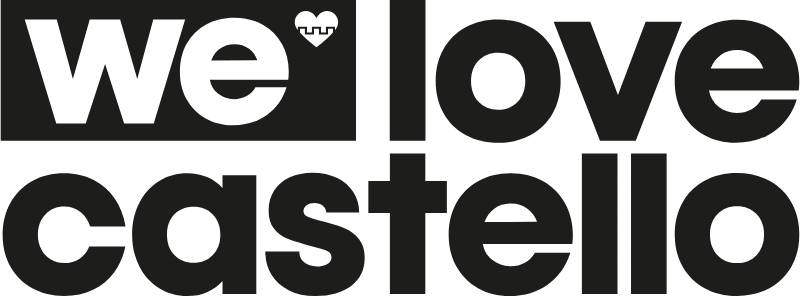

Curriculum Brescia
Mohamed Rezgui.
Tecnico Grafico · Marketing e Comunicazione
Sono Mohamed, Tecnico Grafico e studente di Marketing e Comunicazione. Unisco l’occhio del grafico alla mente del marketer. Cerco uno stage curriculare nell’ambito del mio percorso ITS in Digital Marketing & Communication Manager.
 01 CV
01 CV
01 Profilo
Dal progetto grafico alla strategia.
Mi sono diplomato nel 2024 come Tecnico Grafico al CFP Lonati, dove ho imparato a “sporcarmi le mani” con la suite Adobe. Facendo pratica ho capito presto che una bella grafica non basta se non c’è una strategia dietro. Per questo oggi studio Marketing e Comunicazione all’ITS Machina Lonati: voglio imparare a comunicare e vendere un’idea, non solo a disegnarla.
La mia passione più grande è il design che “esce” dal monitor e diventa reale, come le grafiche per l’abbigliamento o il wrapping per veicoli. Penso al target e al messaggio che il brand deve lanciare, non solo all’estetica.
02 Percorso
Esperienze professionali.
-
03—07 / 2025
Operatore grafico (stage IFTS)
Grafiche per i social e immagine coordinata della galleria d’arte.
-
ESTATI 2021—2024

Addetto alla logistica e gestione spazi
Supporto operativo a eventi musicali ed enogastronomici ad alta affluenza. Quattro stagioni consecutive.
-
09—11 / 2023

Operatore grafico ipermediale (stage)
Materiali digitali e stampati per campagne aziendali, realizzati in collaborazione con il team.
-
03 / 2023

Addetto al negozio e supporto marketing (stage)
Assistenza ai clienti in lingua straniera, distribuzione di volantini, fotografie e materiali promozionali.
-
02—03 / 2023
Fotoritoccatore e grafico vettoriale (stage)
Ritocco fotografico con Photoshop e Lightroom e realizzazione di grafiche vettoriali con Illustrator.
-
04—06 / 2022

Operatore grafico ipermediale (stage)
Contenuti pubblicitari per la stampa e il digitale, nel rispetto della brand identity.
03 Studi
Formazione e lingue.
- 11 / 2025—07 / 2027
Digital Marketing & Communication Manager
ITS Academy Machina Lonati · Brescia · In corso
- 2025
Tecnico della promozione del Made in Italy
IFTS
- 2020—2024
Tecnico Grafico Ipermediale
CFP Francesco Lonati · Brescia
Diploma del 4° anno: 95/100; qualifica del 3° anno: 90/100.
Lingue
Italiano madrelingua · Inglese B1 · Arabo tunisino
04 Strumenti
Competenze e software.
- Photoshop
- Illustrator
- InDesign
- Lightroom
- Premiere Pro
- After Effects
- Adobe XD
- Modellazione 3D
- Rhinoceros 3D
- Adobe Dimension
- Brand identity
- Grafica per social media
- Social Media Strategy
- Content Creation
- Video editing base
- SEO/SEM base
- Web Marketing
Contatti